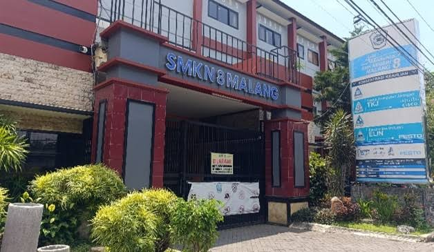
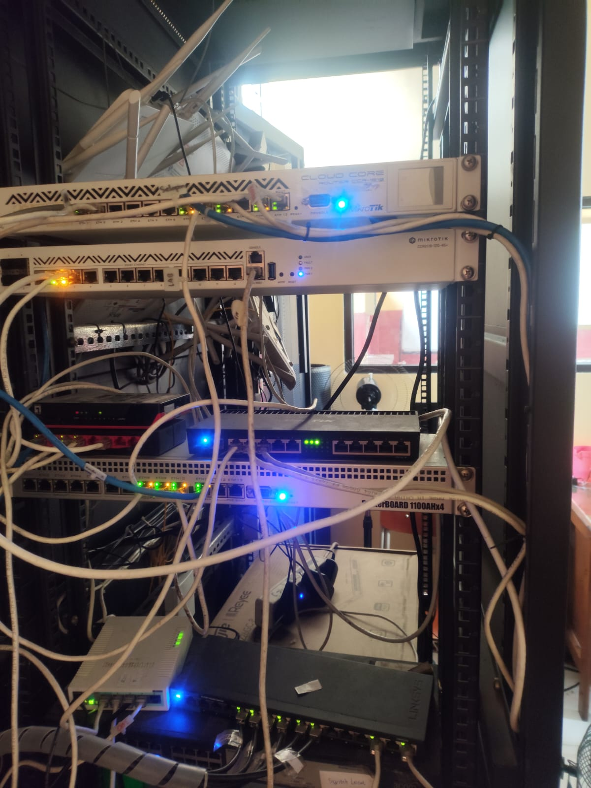
Profil IDUKA
"Menghasilkan lulusan yang siap bersaing di era transformasi digital dengan standar industri global."
Tentang Saya
Halo! Saya Fawaz Musa Thalib, siswa kelas XI TKJ B di SMKN 8 Malang. Portofolio ini merupakan dokumentasi perjalanan Praktik Kerja Lapangan (PKL) saya selama 6 bulan di TEFA SMKN 8 Malang.
Selama PKL, saya mendapatkan pengalaman nyata di bidang Teknik Komputer dan Jaringan, mulai dari konfigurasi jaringan, perawatan perangkat keras, hingga pengelolaan sistem server. Pengalaman ini sangat berharga dalam membentuk kompetensi saya sebagai calon tenaga ahli IT.
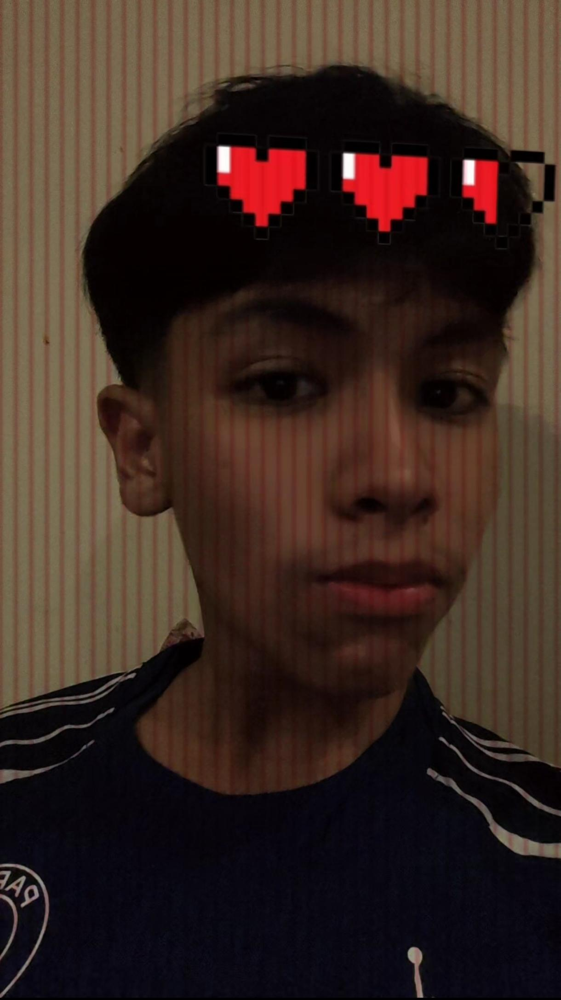
Latar Belakang
Praktik Kerja Lapangan (PKL) merupakan salah satu program pendidikan yang diterapkan di Sekolah Menengah Kejuruan (SMK) untuk memberikan pengalaman nyata kepada siswa dalam dunia kerja profesional. Program ini bertujuan untuk menjembatani kesenjangan antara teori yang dipelajari di kelas dengan praktik di lapangan kerja yang sesungguhnya. Berdasarkan Peraturan Menteri Pendidikan dan Kebudayaan, PKL wajib dilaksanakan minimal 3-6 bulan.
Tujuan PKL
- Mengaplikasikan teori ke praktik nyata
- Mengembangkan kompetensi teknis
- Memahami budaya kerja industri
- Meningkatkan soft skills
- Mempersiapkan mental kerja
Manfaat PKL
- Pengalaman kerja real-world
- Peningkatan keterampilan praktis
- Pemahaman standar industri
- Portfolio untuk karir
- Koneksi dengan praktisi
Kegiatan Selama PKL
Bulan 1-2
Memasuki bulan pertama PKL, saya memulai dengan pengenalan mendalam terhadap infrastruktur TEFA SMKN 8 Malang. Saya diperkenalkan dengan perangkat networking utama seperti switch, router, dan server. Tetapi kegiatan yang saya sering lakukan dari bulan pertama sampai kedua yaitu bermain CTF (Capture The Flag) untuk melatih kemampuan cybersecurity saya dan menguasai command linux dasar. Saya juga mengganti beberapa hardware seperti poe yang rusak agar jaringan sekolah tetap stabil.
Bulan 3-4
Bulan ketiga sampai ke empat, saya fokus pada praktik konfigurasi lebih lanjut. Saya belajar mengonfigurasi Cisco, mempelajari VLAN, dan memahami juga basic mikrotik, pada bulan ketiga dan empat saya terkadadang mempunyai tugas hardware seperti memperbaiki pc all in one dengan teman pkl saya jefri dan juga memperbaiki laptop yang install ulang atau ada masalah troubleshooting lainnya.
Bulan 5-6
Pada bulan kelima sampai keenam, saya lebih di fokuskan ke configurasi mikrotik dan monitoring jaringan sekolah. pengetahuan saya berkembang ke level troubleshooting dasar. Saya belajar mengidentifikasi dan mengatasi masalah konektivitas jaringan, melakukan monitoring jaringan menggunakan mikrotik dan riujie , serta mempelajari bagaimana cara firewall bekerja untuk memblokir hal yang tidak di inginkan agar server sekolah tidak memakan cpu lebih banyak dan traffict yang berlebihan. Selain itu saya sempat ikut membantu guru pkl saya untuk merealisasikan jaringan hotspot di sekolah agar gampang untuk di monitoring.
Kompetensi
Monitoring Jaringan
Step 1: Torch Interface Yang Digunakan Siswa
Langkah pertama dalam monitoring jaringan adalah mengidentifikasi interface yang digunakan oleh siswa. Dengan menggunakan tool seperti Torch Yang ada di Winbox, kita dapat melihat semua interface yang aktif dan traffic yang melaluinya secara real-time.
Interface yang terdeteksi akan ditampilkan dengan detail bandwidth usage
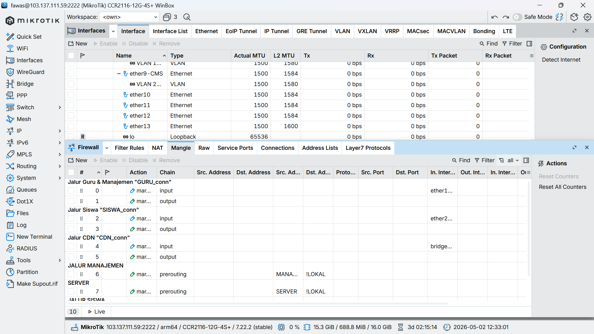
Klik untuk ganti gambar

Klik untuk ganti gambar
Step 2: Catat IP dengan Traffic Tinggi
Setelah interface diidentifikasi, kita memantau traffic yang melewati setiap interface. Jika ada traffic yang menggunakan bandwidth minimal 50 Mbps, kita perlu mencatat IP address yang melakukan traffic tersebut untuk dianalisis lebih lanjut.
IP yang dicurigai akan disimpan untuk proses investigasi selanjutnya
Step 3: Search IP di Rujie Cloud
Setelah mengidentifikasi IP yang mencurigakan, masuk ke panel Rujie Cloud bagian Client Management. Di sini kita dapat search IP tersebut untuk melihat informasi detail tentang device, user, dan aktivitas yang terkait dengan IP tersebut.
Data device dan user terkait akan ditampilkan untuk verifikasi
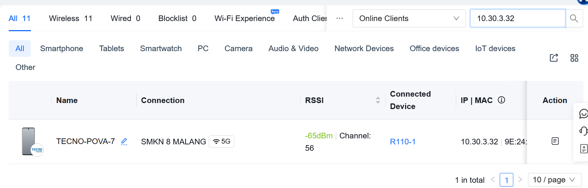
Klik untuk ganti gambar
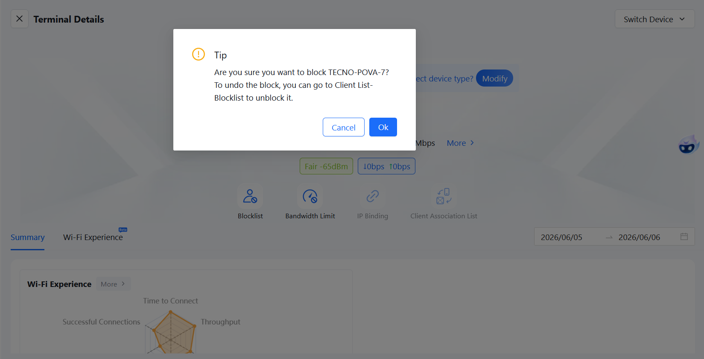
Klik untuk ganti gambar
Step 4: Blok IP Tersebut
Setelah melakukan investigasi dan memastikan bahwa traffic tersebut tidak diinginkan atau melanggar kebijakan jaringan, IP dapat diblok melalui firewall atau access control list (ACL). Pemblokiran ini akan mencegah IP tersebut untuk melakukan komunikasi dengan jaringan sekolah.
IP telah diblok untuk melindungi stabilitas jaringan sekolah
"The only way to do great work is to love what you do."
- Steve Jobs
Dokumentasi Kegiatan
Visual Report Archive
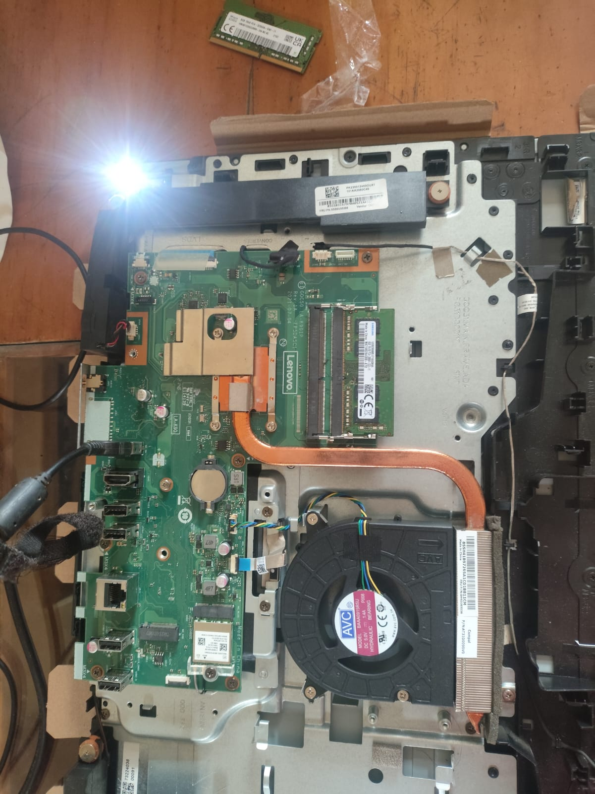
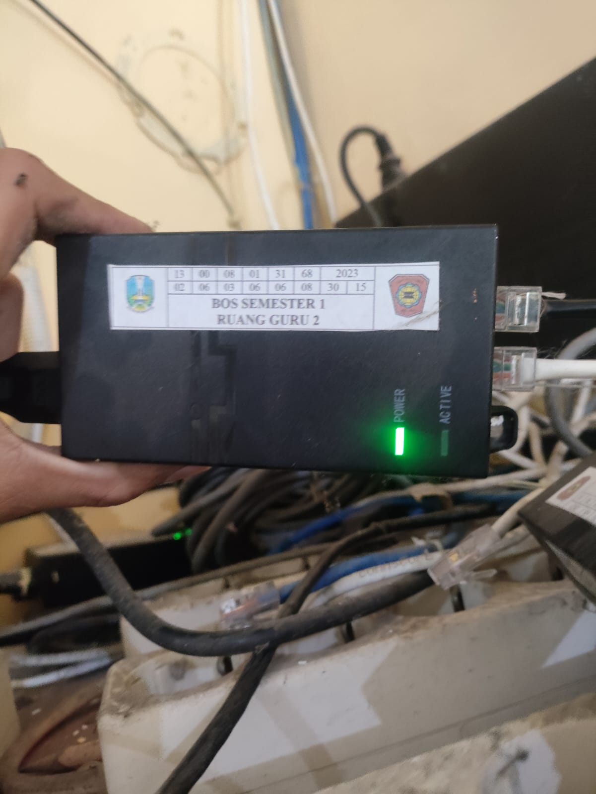
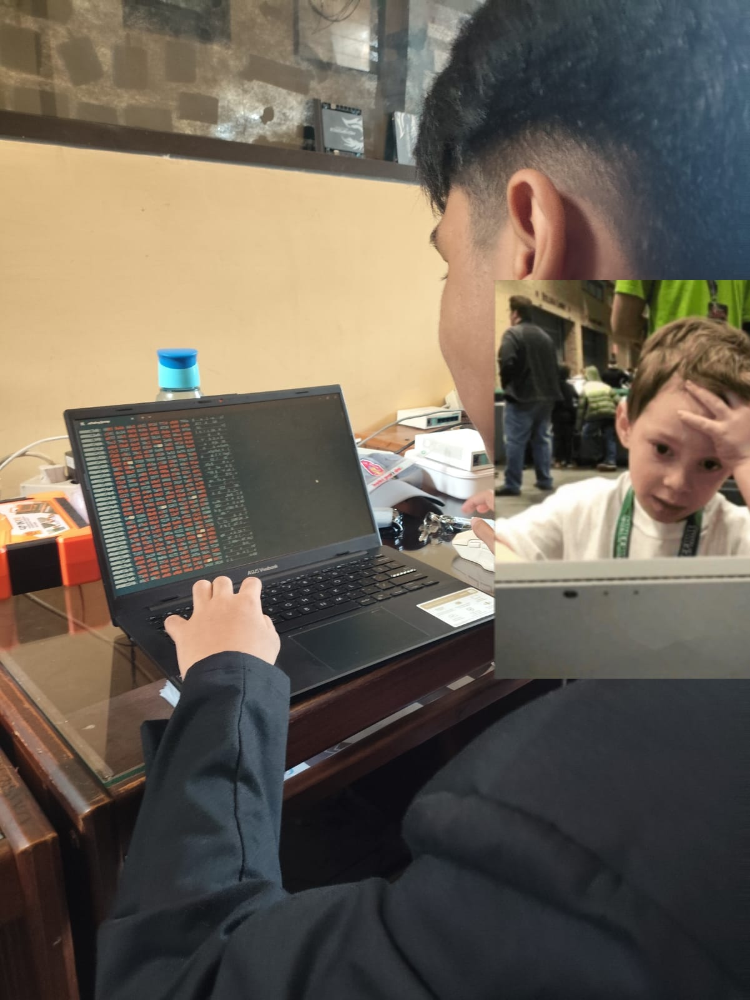
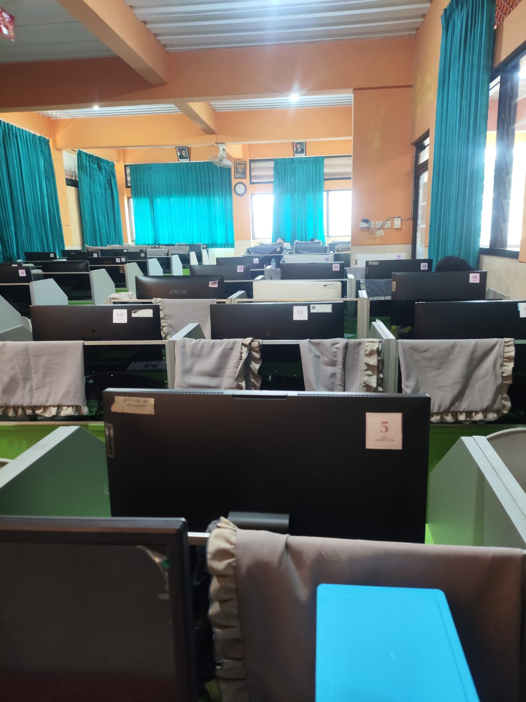
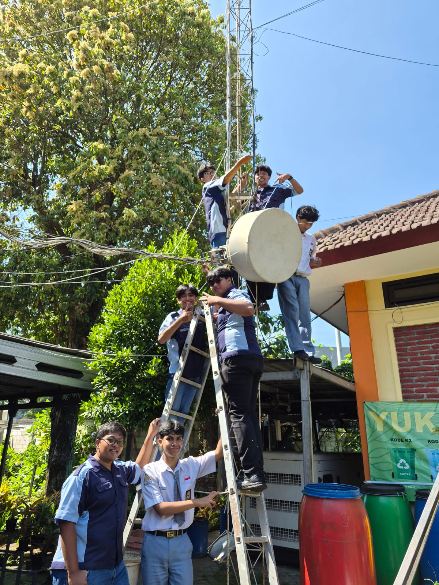